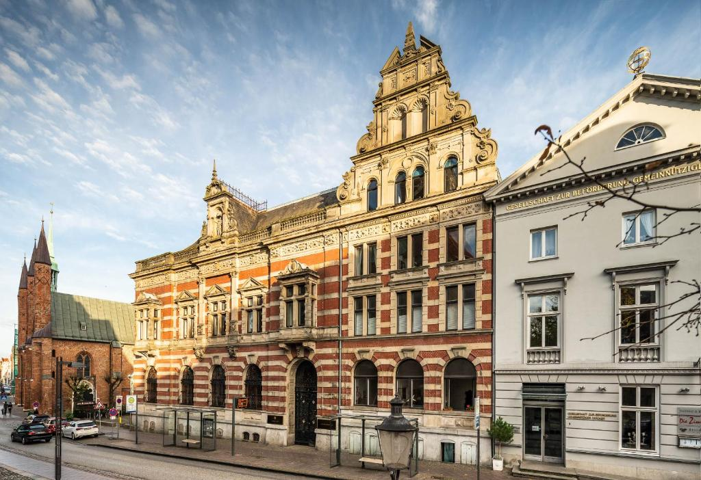
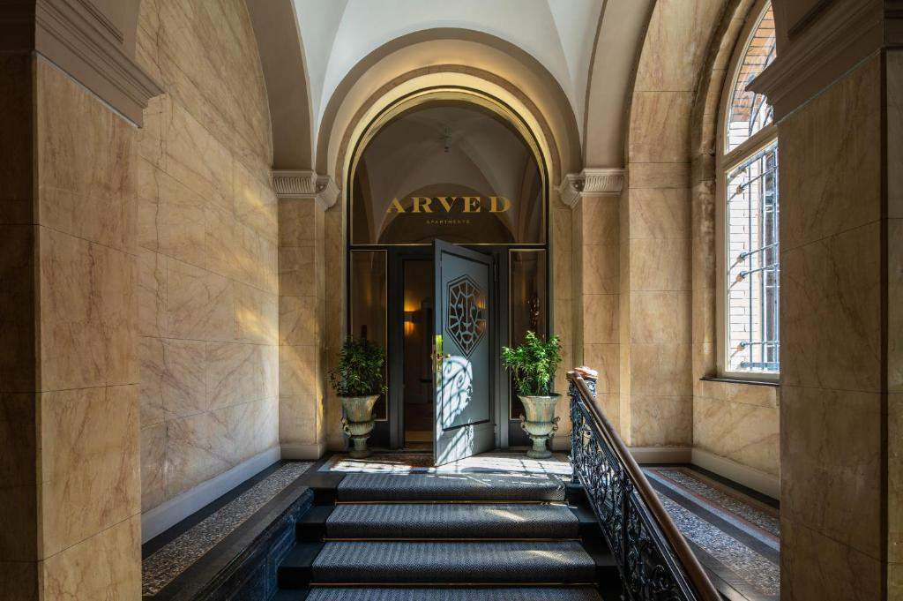

Ein vierflügeliger Bau an der Königstraße 1–3 — behutsam bewahrt, mit Sinn für das Besondere.
Das klassische Gebäude wurde in der Kaiserzeit erbaut und präsentiert sich heute noch ursprünglich. Der vierflügelige Bau gehört zu den charaktervollen Adressen der Lübecker Altstadt — wenige Schritte vom Holstentor und den berühmten Backsteinkirchen entfernt.
Wer Sinn für das Besondere hat, erfreut sich an charmanten Design-Details, behutsam im Stil des Hauses integriert: Samt und Messing, Stuck und Kerzenlicht, originale Fenster und moderner Komfort. Tradition und Gegenwart, unter einem Dach.
Ob privat oder geschäftlich — bei uns wohnen Sie ruhig und mit Charakter, ein Zuhause auf Zeit in historischem Ambiente.
Apartments ansehen
Eine Nacht oder ein ganzer Monat — prüfen Sie in Sekunden die Verfügbarkeit und buchen Sie direkt, ohne Umwege.